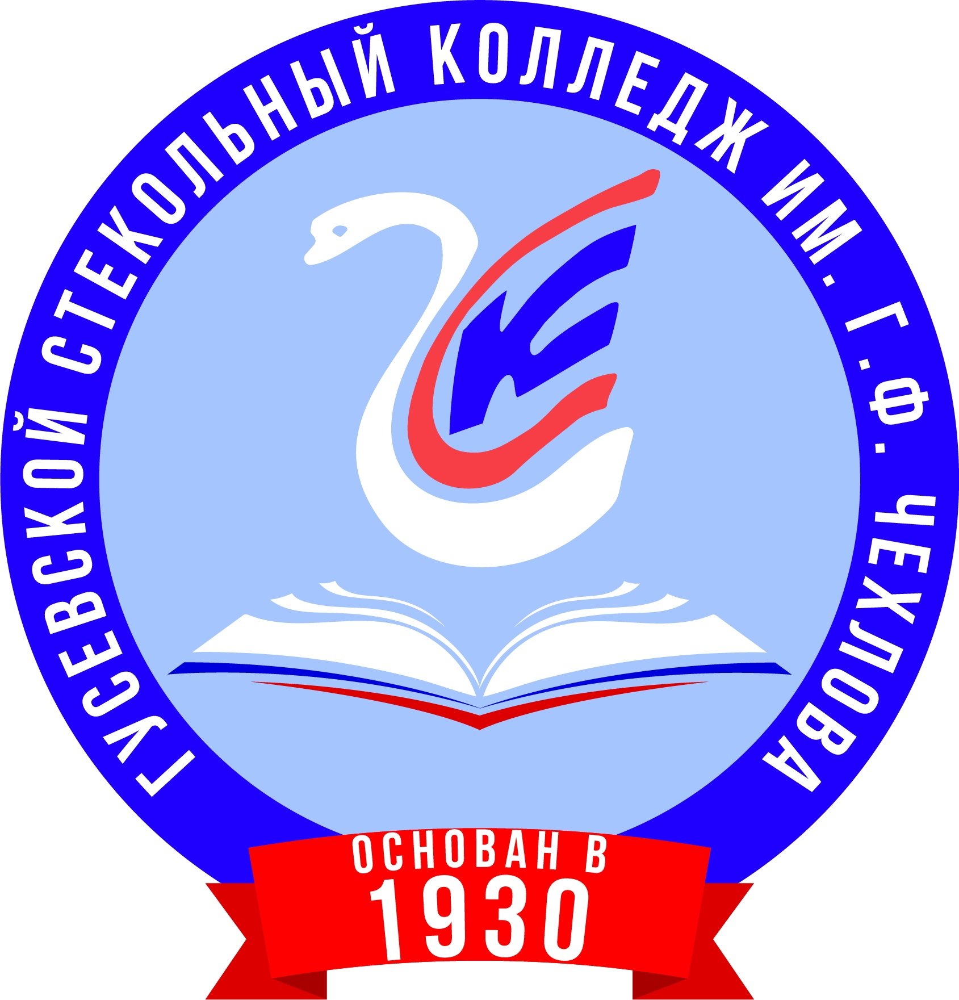

Гусевской стекольный колледж им. Г.Ф. Чехлова
ГСК — это флагманский колледж химико-технологического образовательно-производственного кластера «Гусь Хрустальный» в городе Гусь-Хрустальный Владимирской области. Это центр внедрения и развития дуального обучения, инновационная площадка развития дополнительного образования в системе СПО. На базе колледжа созданы 5 специализированных центров компетенций, ежегодно колледж подтверждает звание ведущего колледжа в области машиностроения. Единственный колледж в ЦФО продолжающий обучение по программам подготовки рабочих профессий для стекольной промышленности. Колледж имеет соглашения о сотрудничестве с высшими учебными и научными учреждениями РФ: РХТУ (Российский химико-технологический университет им. Д.И. Менделеева), Институт общей и неорганической химии имени Н.С. Курнакова Российской академии наук На базе ГСК действует учебно-производственный комплекс, участие в котором позволяет студентам не только получать практическое обучение, но и получать оплату за свой труд. Колледж основан в 1923 году.
Директор
Фильчаков Юрий Алексеевич
Адрес: 601501, г. Гусь-Хрустальный, ул. Ломоносова, д. 28 Тел: 8(49241)2-53-21. E-mail: gxtcol@yandex.ru Официальный сайт: https://гхтк.рф
Направления подготовки
ГБПОУВО «Александровский медицинский колледж» в 2023 году осуществляет прием для обучения следующим специальностям:
Программы подготовки специалистов среднего звена:
Программа подготовки квалифицированных рабочих и служащих:
Дополнительная информация
Колледж в VK
Подписывайтесь на наши социальные сети, будте в курсе жизни колледжа
